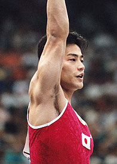

Yoshiaki Hatakeda (JPN)
1995 World PH and PB Silver
Medalist

Medal Total
Olympic Games: 1
Bronze
World Championships: 3 Silver
Yoshiaki was born on May 12, 1972, in Naruto City, Tokushima.
Competition Results
1989
Asia Youth Cup: 7th AA
Intl. Junior Championships: 9th AA, 2nd HB, 3rd PH, 3rd PB
1990
Asian Games: 2nd Team, 3rd HB
Chunichi Cup: 6th AA, 3rd PB, 6th FX
JPN Championships: 7th AA, 1st HB
NHK Cup: 7th AA
World Sports Fair: 9th AA, 1st PB
1991
Chunichi Cup: 4th AA, 2nd PH, 2nd PB, 6th V
JPN Championships: 2nd AA, 2nd PH, 2nd PB, 6th FX
NHK Cup: 5th AA
World Championships: 4th Team, 10th AA, 4th PH, 6th PB
1992
JPN Championships: 5th AA, 2nd PH, 2nd PB, 2nd HB
NHK Cup: 4th AA
Olympic Games: 3rd Team, 5th HB, 6th PH
Pacific Alliance Championships: 4th AA, 4th PH, 5th FX, 5th V, 6th R, 6th
HB, 7th PB
World Championships: 6th PH
1993
East Asian Games: 5th AA, 4th PH, 7th V
JPN Championships: 1st AA, 1st HB, 2nd PB, 6th PH
NHK Cup: 2nd AA
Nikon International: 13th AA, 8th FX
USA-JPN Dual Meet: 2nd AA, 1st PH, 1st PB, 1st HB
1994
Asian Games: 3rd Team, 3rd AA, 1st PH, 4th PB, 7th V
JPN Championships: 2nd AA, 1st PH, 1st PB
NHk Cup: 3rd AA
World Championships (Brisbane): 13th AA
World Championships (Dortmund): 6th Team
1995
Chunichi Cup: 4th AA, 1st HB, 4th PH, 4th PB, 6th V, 7th FX
JPN Championships: 1st AA, 1st HB, 2nd PH, 2nd PB
NHK Cup: 5th AA
University Games: 5th AA, 3rd PH, 7th PB
World Championships: 2nd Team, 6th AA, 2nd PH, 2nd HB,
7th PB
1996
French International: 2nd HB, 3rd PH
JPN Championships: 3rd AA, 1st HB
NHK Cup: 1st AA
Olympic Games: 10th Team, 15th AA, 5th PH
1997
East Asian Games: 9th AA, 2nd PH, 4th PB
NHK Cup: 1st AA
University Games: 2nd Team, 3rd HB, 5th PB
World Championships: 4th Team 11th AA, 5th HB
1998
Goodwill Games: 11th AA, 4th PH, 5th HB
1999
JPN Championships: 26th AA, 2nd PH
NHK Cup: 13th AA
2000
JPN Olympic Trials: 27th AA
This page was created on September
11, 2005 and was last updated on November 19, 2005.
© Gymn Forum